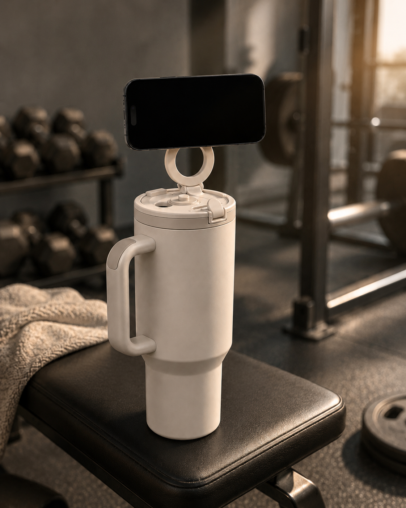

The body of a steel bottle has been a solved problem for fifteen years. There is nothing left to win there. So we did not try to win there. We put the year, and the conviction, into the one part everyone else treats as an afterthought: the cap.
The reasoning is simple, and it is the whole idea of the company. The thing you reach for most often should do the most, not the least. A bottle sits on the table all day doing one job. The cap is where we decided it would earn its place.
Not on the body. Not on a base. In the cap.
People assumed the magnet should go on the side, where the phone sits flat against the wall. It is the obvious answer, and it is wrong. A phone on the side of a bottle is a phone you cannot read — the angle is flat, the screen faces the ceiling. The cap is the only place where the screen faces you, where the bottle becomes a stand instead of a wall.
The obvious place was the wrong place. We were not interested in the obvious one. We were interested in the right one.
That single decision is why the bottle works on a desk, on a bench, in a cupholder — anywhere you set it down, the screen is already where your eyes are.
Eighteen versions, because seventeen were not good enough
Version 6 leaked. Version 11 held but the magnet drifted over a week of use. We did not ship until version 18, because shipping the seventeenth would have meant shipping something merely good. The first seventeen are in a box in the studio — not as nostalgia, but as the record of a standard we refused to lower.

We also left the electronics out, on purpose. No battery, no charging coil, no app, no firmware. A battery dies; a magnet does not. The cap is replaceable, and covered for life. We would rather the object outlive the trend than chase it.
That is the conviction. The cap is the whole idea — and it is the best one anyone has made.